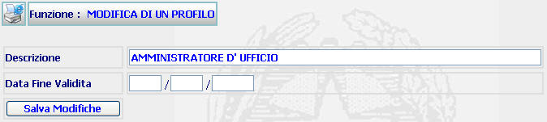

GENERALITA'
MODIFICA DI UN PROFILO: La funzione, consente di modificare un profilo utente già esistente nel sistema
LE MASCHERE VIDEO
La funzione in esame viene realizzata attraverso l'utilizzo della seguente maschera che riporta gli elementi descrittivi e operativi del profilo utente.

COME FARE PER ...
Per modificare un profilo l'amministratore deve:
Posizionarsi sulla scheda Modifica di un Profilo.
Modificare e/o introdurre i dati prescelti.
Confermare i dati inseriti nella maschera agendo sul bottone . A fronte di questa operazione le modifiche del profilo vengono inserite nel sistema e viene visualizzata la Lista Profili esistenti.
CAMPI
I dati di un profilo che possono essere modificati sono i seguenti:
| NOME | DESCRIZIONE |
| Descrizione | Compilare il campo con testo libero |
| Data Fine Validità | Compilare il campo data nel formato gg/mm/aaaa. |
BOTTONI
Oltre ai comandi funzionali relativi al menù verticale sono presenti i seguenti comandi:
|
COMANDI |
DESCRIZIONE |
|
|
A fronte di tale comando, il sistema dopo aver verificato la validità dei dati specificati, inserisce i dati nel sistema e viene visualizzata la Lista Profili esistenti. |
CONTROLLI
A fronte della pressione del bottone , il sistema verifica la correttezza dei dati e visualizza un messaggio di errore nel caso che:
Il campo descrizione non risulti inserito.
Il formato della DATA FINE VALIDITA' non sia corretta.
Se il sistema non riscontrerà errori verrà visualizzata la Lista Profili esistenti.